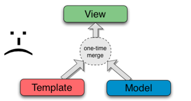
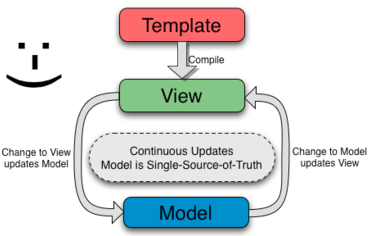

“AngularJS is a framework for client-side Model–View–Controller (MVC) and Model–View–ViewModel (MVVM) architectures. The framework adapts and extends traditional HTML to present dynamic content through two-way data-binding that allows for the automatic synchronization of models and views."
AngularJS is a framework for client-side Model–View–Controller (MVC) and Model–View–ViewModel (MVVM) architectures.
View - What the user sees.
Model - The data shown to the user in the view and with which the user interacts
Controller - Logic behind the view.
The framework adapts and extends traditional HTML to present dynamic content through two-way data-binding that allows for the automatic synchronization of models and views.
Template - HTML with additional markup
Directive - extend HTML with custom attributes and elements
Services - Resuable logic independent of views
Two-way Data Binding...
One-Way Data Binding
Two-Way Data Binding
